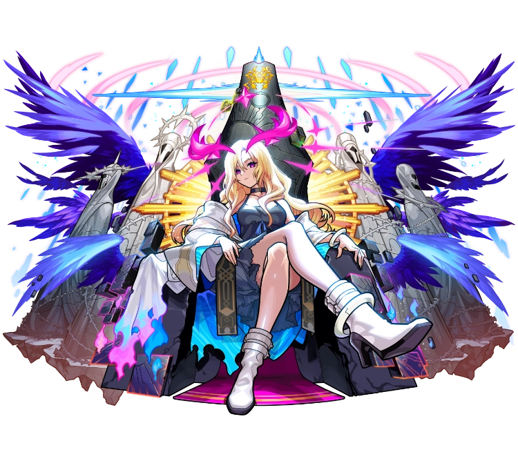
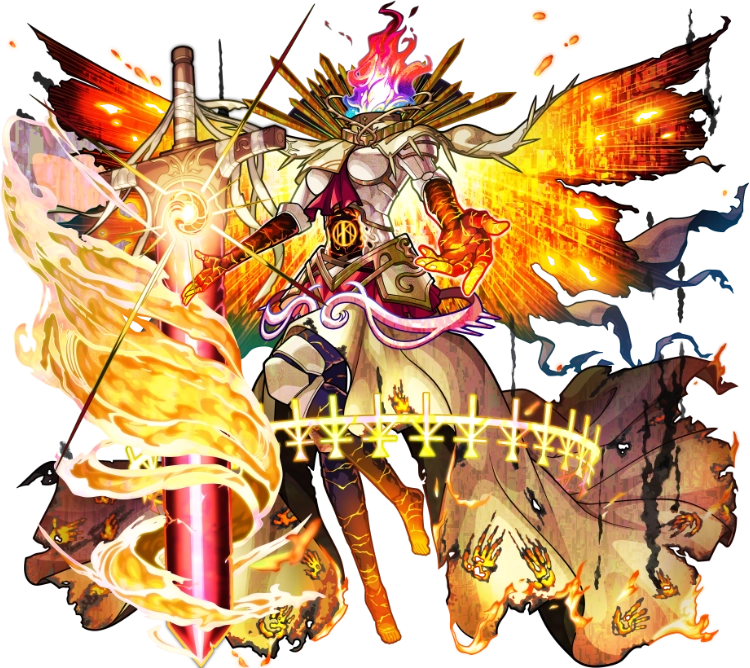
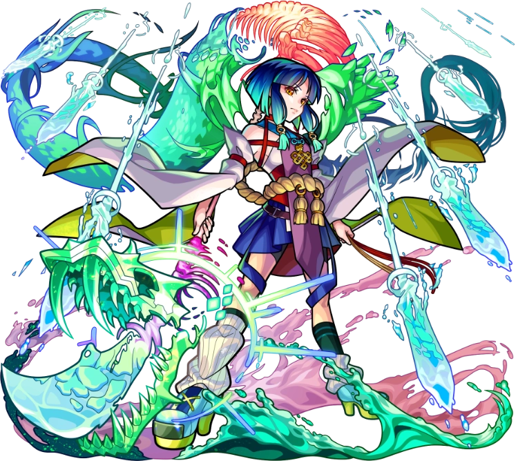

【キャラクター】
＜新生・堕天の王 ルシファー＞
ルシファーはモンストの顔のような存在で、多くのユーザーに愛されているキャラクター 登場時から数年後に進化し、常に最強で沢山のクエストを破壊しているキャラクターでもある。
＜篤キ狂信ノ幻像 フォーサー＞
フォーサーはクエストに勝つと入手可能な降臨キャラクター モンストでは爆絶・轟絶など様々な難易度があるがフォーサーは黎絶という新しい最高難易度で登場 多くのユーザーを苦しめ、クリア率は１％を切るように作られていた。
＜ヤクモ：大荒神武装＞
ヤクモはモンストの中でも殴り・ＳＳ・友情すべてが最強で登場から2年経つが今でも最強なキャラクター。